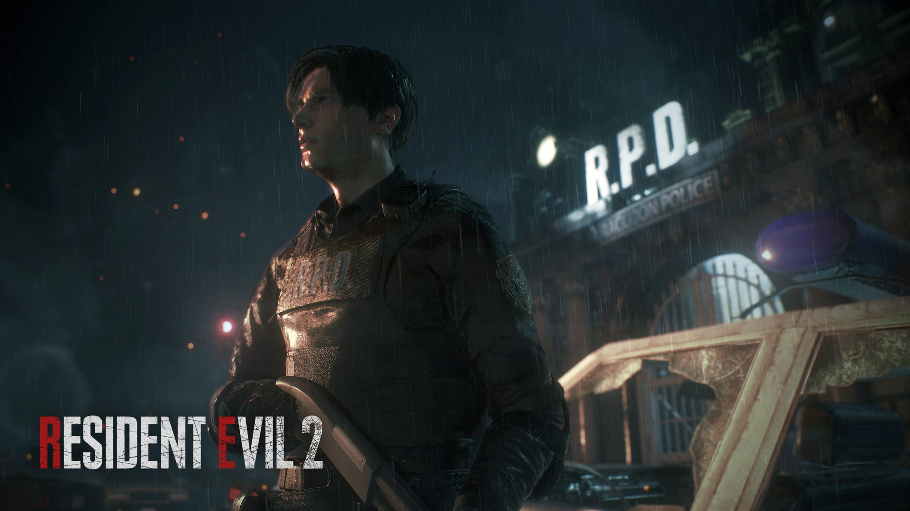
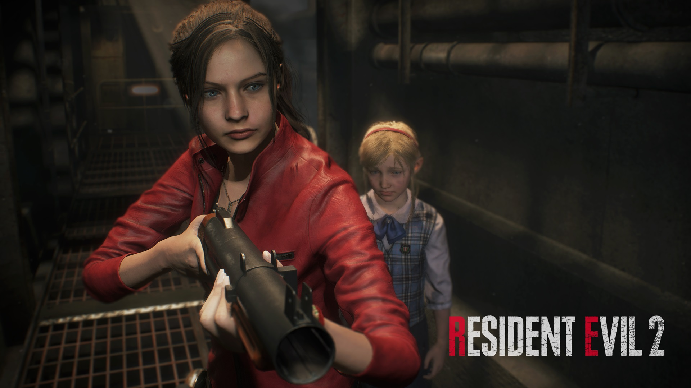
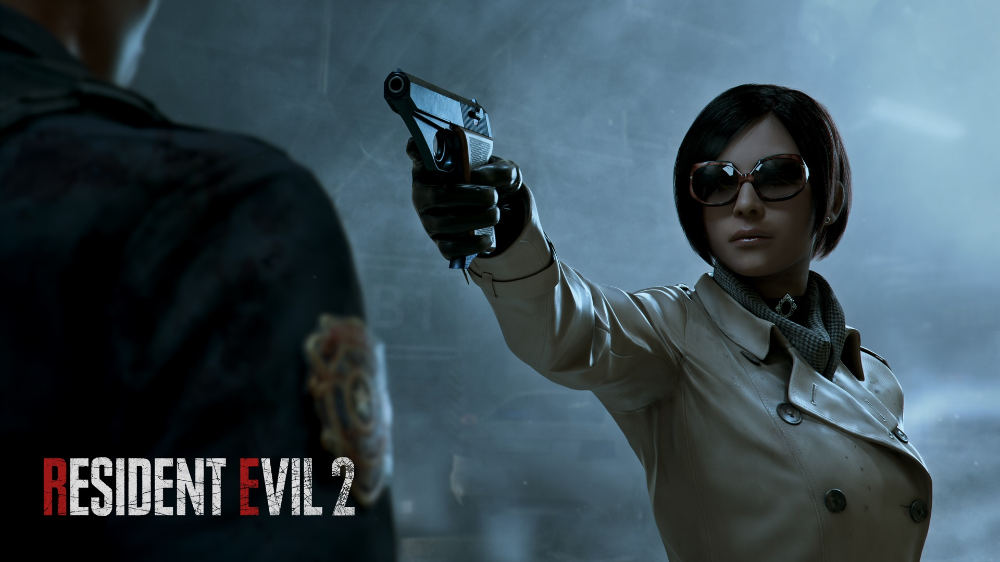
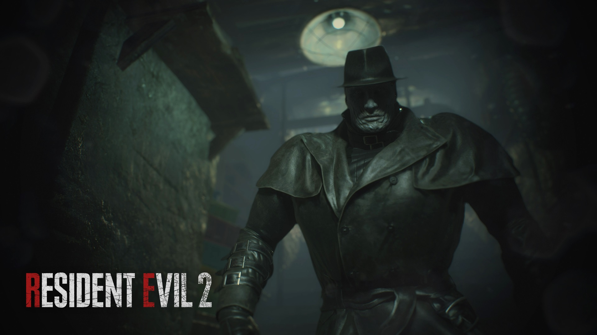
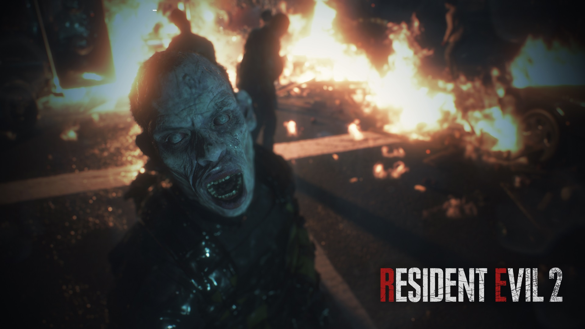
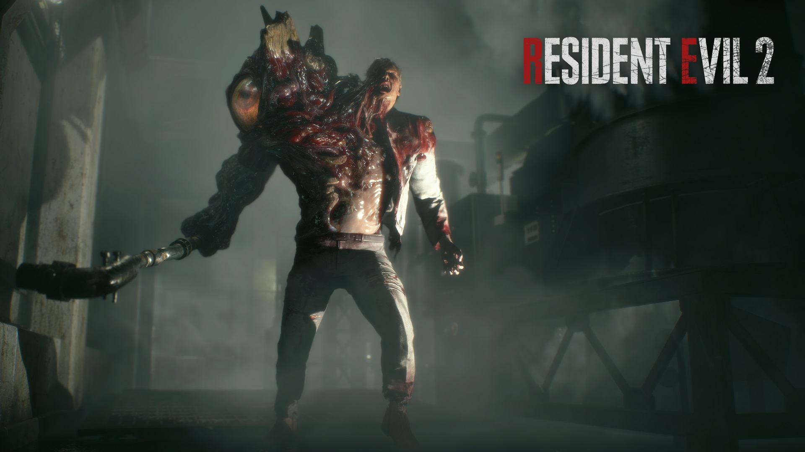

- Desarrollador: Capcom
- Lanzamiento: Enero de 2019
- Género: Survival horror
- Plataformas: PC, PS4, Xbox One
91
Metacritic
Resident Evil 2 Remake es la reimaginación del clásico de 1998, desarrollada y publicada por Capcom en enero de 2019. Es un survival horror en el que cada bala cuenta.
Controlas a Leon S. Kennedy y a Claire Redfield en plena crisis zombi. Destaca por su apartado gráfico con el motor RE Engine.
Protagonistas


Secundarios y enemigos




Datos curiosos
- Es un remake completo del Resident Evil 2 original de 1998, no una simple mejora gráfica.
- Mr. X, el Tyrant, te persigue por la comisaría de Raccoon City.
- Tiene dos campañas, la de Leon y la de Claire, con escenarios A y B.
- Usa el motor RE Engine de Capcom y cámara por encima del hombro.
Considerado por muchos uno de los mejores remakes de la historia de los videojuegos.